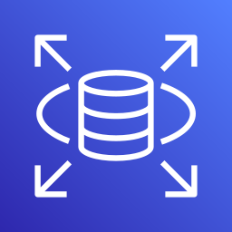
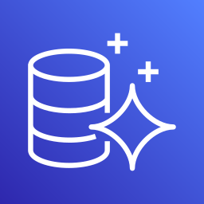
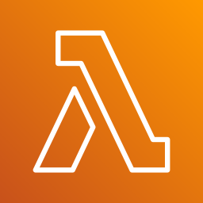

Лекція 28: RDS, Aurora, RDS Proxy, MemoryDB
Середній рівень: усі правила з повної лекції, але простими словами. Повна: ../28-rds-aurora-proxy.md. Це теорія, в AWS ми цього не виконували. Факти, які не вдалося звірити, позначені (не звірено).
Головна ідея
RDS це керована SQL-база: AWS сам її обслуговує. Multi-AZ рятує від збою, read replica розвантажує читання, RDS Proxy рятує базу від натовпу Lambda. Aurora це швидша база AWS, сумісна з MySQL і PostgreSQL.
Навіщо це так задумано
Базу з SQL важко масштабувати: запис іде в одне місце. Тому AWS дав окремі інструменти для окремих проблем: резерв на випадок падіння, копії для читання, пул з'єднань для різких піків.
Крок 1. Що таке RDS
RDS це керована SQL-база. Ви обираєте рушій: MySQL, PostgreSQL, MariaDB, Microsoft SQL Server, Oracle, Db2 або Aurora. У нотатках було шість рушіїв, у документації тепер є ще Db2.
Не-SQL дані (ключ-значення) тут не зберігають: для цього є DynamoDB.
Крок 2. Multi-AZ проти read replica
Це найчастіша пара для плутанини на іспиті.
| Multi-AZ | Read replica | |
|---|---|---|
| Для чого | пережити збій | прискорити читання |
| Реплікація | синхронна (DB cluster: напівсинхронна) | асинхронна |
| Чи читає застосунок з копії | ні (в основному режимі) | так, лише SELECT |
| При збої | автоматичне перемикання (failover) на резерв | нічого автоматичного |
| Де | інша зона доступності | та сама зона, інша зона або інший регіон |
Образ для пам'яті: Multi-AZ це запасне колесо, а read replica це другий касир.
Що ще треба знати:
- Multi-AZ буває двох видів. З одним резервом (він лише чекає, не читає) і з двома резервами (Multi-AZ DB cluster: вони ще й обслуговують читання).
- У репліку не можна писати, лише читати.
- Репліка відстає, бо реплікація асинхронна.
- Репліку можна зробити Multi-AZ, тоді в неї є власний резерв.
- Реплік автоматично не додається: їх створюють вручну.
- Якщо видалити основну базу, репліки в тому ж регіоні стають окремими базами.
- За трафік реплікації в межах одного регіону плати нема.
Як відповідати на питання:
- «Застосунок має працювати далі після падіння бази без втручання»: Multi-AZ.
- «Звіти гальмують основну базу»: read replica.
- «І те, й інше»: Multi-AZ плюс read replicas.
Крок 3. Aurora
Aurora працює як MySQL або PostgreSQL, тож драйвери ті самі, змінюється лише адреса.
| Властивість | Значення |
|---|---|
| Сумісність | MySQL і PostgreSQL |
| Сховище | розподілене, дані в трьох зонах, росте саме до 256 ТіБ |
| Репліки для читання | до 15 |
| Швидкість за твердженням AWS | у 5 разів швидша за MySQL, у 3 рази за PostgreSQL (не звірено, цифра маркетингова) |
| Відставання реплік | зазвичай до 100 мс (у нотатках було «менше 10 мс», це неточно) |
| Що ще | автоматичний failover, бекапи, патчі, моніторинг |
Коли що обирати:
- Oracle, SQL Server, MariaDB, Db2: тільки RDS.
- MySQL чи PostgreSQL, потрібно швидше й багато реплік: Aurora.
Крок 4. RDS Proxy
Проблема. Lambda масштабується миттєво, і кожен виклик може відкрити своє з'єднання. База має обмежену кількість з'єднань: 1000 Lambda дають 1000 з'єднань, і база перевантажується.
Рішення. Між Lambda і базою ставлять RDS Proxy:
- Усі Lambda йдуть до проксі.
- Проксі тримає пул з'єднань і розподіляє їх між Lambda.
- До бази йде набагато менше прямих з'єднань.
Додатково проксі вміє IAM-автентифікацію і зберігає пароль у Secrets Manager. Код майже не змінюється: міняється лише адреса бази.
Фраза-підказка: «Lambda вичерпує з'єднання з RDS» означає RDS Proxy.
Крок 5. MemoryDB проти ElastiCache
| ElastiCache | MemoryDB | |
|---|---|---|
| Роль | кеш перед базою | основна база даних |
| Дані | кеш, не для збереження | зберігаються надійно (Multi-AZ журнал) |
| Читання | мікросекунди | мікросекунди (записи: мілісекунди) |
У нотатках MemoryDB «понад 160 мільйонів запитів на секунду» (не звірено).
Крок 6. Redis і Memcached ще раз
| Redis / Valkey | Memcached | |
|---|---|---|
| Висока доступність | Multi-AZ з автоматичним failover | нема |
| Читання | read replicas | нема |
| Збереження | backup і restore є; «AOF» з нотаток застаріло | не зберігає |
| Роль | кеш, message broker (pub/sub), тимчасове сховище | лише кеш |
| Масштабування | вертикальне і sharding | горизонтальне: додаєш вузли |
| Потоки | один | багато |
Поправка до нотаток: у таблиці порівняння ElastiCache колонка «Durability» для Redis/Valkey це «No». Довговічна база для даних це MemoryDB.
Словник
| Термін | Що це |
|---|---|
| RDS | керована SQL-база |
| Multi-AZ | резерв в іншій зоні на випадок збою |
| Read replica | копія лише для читання |
| Failover | автоматичне перемикання на резерв |
| Aurora | швидша база AWS, сумісна з MySQL і PostgreSQL |
| RDS Proxy | пул з'єднань між застосунком і базою |
| MemoryDB | база в пам'яті, що не губить дані |
| Replica lag | відставання репліки |
🖼 Схема: RDS: Multi-AZ проти Read replica

RDS Primary: зона A| Multi-AZ | Read replica | |
|---|---|---|
| Мета | доступність: пережити збій | продуктивність: розвантажити читання |
| Реплікація | синхронна | асинхронна |
| Застосунок читає з копії | ні (у класичному режимі) | так, лише SELECT |
| Де розміщена | інша зона того ж регіону | та сама зона, інша зона чи інший регіон |
| Свіжість даних | ті самі дані | можливе відставання |
- один standby
- лише чекає на відмову
- читання не обслуговує
- два standby у трьох зонах
- можуть обслуговувати читання
| Умова в питанні | Відповідь |
|---|---|
| База падає, застосунок має жити без втручання | Multi-AZ |
| Звіти гальмують основну базу | Read replica |
| Потрібно і те, й інше | Multi-AZ плюс read replicas |
🖼 Схема: RDS і Aurora: що обрати

Aurora- Oracle, SQL Server, MariaDB, Db2
- звичайна SQL-база без особливих вимог
- MySQL чи PostgreSQL з більшою швидкістю
- до 15 реплік
- сховище у трьох зонах
🖼 Схема: RDS Proxy: Lambda і з'єднання
- 1000 Lambda одночасно
- кожна відкриває своє з'єднання
- 1000 з'єднань: база захлинається
- усі Lambda йдуть у proxy
- proxy тримає кілька постійних з'єднань
- база працює спокійно

Lambda 1, Lambda 2, ... Lambda N- відповідь: RDS Proxy
- збільшити Lambda
- додати read replica
🖼 Схема: ElastiCache, Memcached, MemoryDB
- Valkey, Redis OSS, Memcached
- збереження як кеш не гарантує
- читання: мікросекунди
- прискорює іншу базу
- Valkey, Redis OSS
- дані в Multi-AZ транзакційному журналі
- читання: мікросекунди, запис: мілісекунди
- не треба тримати окремо кеш і базу
| Redis / Valkey | Memcached | |
|---|---|---|
| Висока доступність | Multi-AZ з автоматичним failover | нема |
| Читання | read replicas | нема |
| Розподіл даних | sharding (cluster mode) | multi-node: дані ділять вузли |
| Збереження | є backup і restore | не зберігає |
| Роль | кеш, pub/sub, sorted sets | лише кеш |
| Потоки | один потік | багатопотоковий |
| Потрібно | Вибір |
|---|---|
| Кеш для SQL або сесії | ElastiCache |
| Швидка in-memory база, що не губить дані | MemoryDB |
| Не-SQL, ключ-значення, серверлес | DynamoDB |
| SQL, JOIN, транзакції | RDS або Aurora |
Що запам'ятати на іспит
- Multi-AZ це доступність (синхронно), read replica це читання (асинхронно).
- У репліку лише читають; реплік автоматично не додається.
- Aurora: MySQL і PostgreSQL, до 15 реплік, три зони.
- Oracle, SQL Server, MariaDB, Db2: тільки RDS.
- Lambda вичерпує з'єднання: RDS Proxy.
- ElastiCache це кеш, MemoryDB це база.
Перевірте себе
- Яка різниця між Multi-AZ і read replica за метою?
- Чи читають із резерву Multi-AZ у класичному режимі?
- Що робить RDS Proxy?
- Скільки реплік підтримує Aurora?
- Що обрати, якщо потрібна in-memory база, яка не втрачає дані?
Відповіді
- Multi-AZ це про доступність, read replica про швидкість читання.
- Ні, у класичному режимі резерв лише чекає.
- Тримає пул з'єднань, щоб Lambda не вичерпала з'єднання бази.
- До 15.
- MemoryDB.
Повна версія: ../28-rds-aurora-proxy.md.